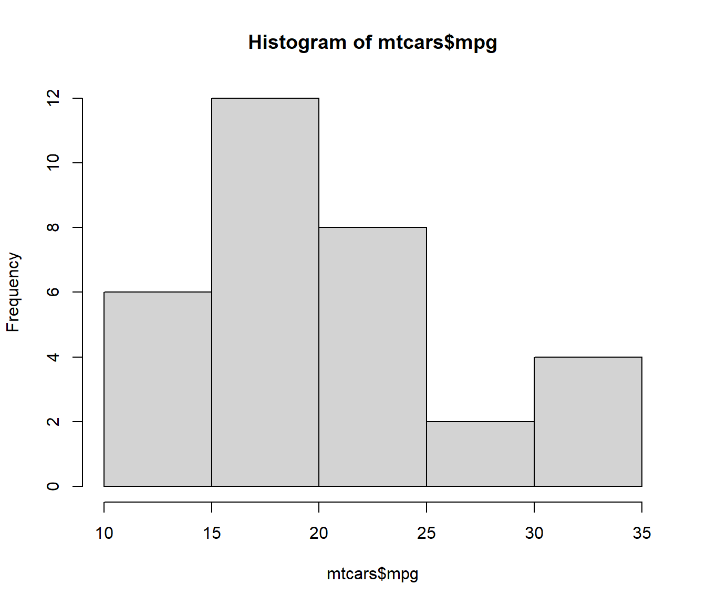

3.3 Inclusión de código R
Se puede incluir código R entre los delimitadores ```{r} y ```.
Por defecto, se mostrará el código, se evaluará y se mostrarán los resultados justo a continuación.
Por ejemplo el siguiente código:
```{r}
head(mtcars[1:3])
summary(mtcars[1:3])
```produce:
head(mtcars[1:3])## mpg cyl disp
## Mazda RX4 21.0 6 160
## Mazda RX4 Wag 21.0 6 160
## Datsun 710 22.8 4 108
## Hornet 4 Drive 21.4 6 258
## Hornet Sportabout 18.7 8 360
## Valiant 18.1 6 225summary(mtcars[1:3])## mpg cyl disp
## Min. :10.40 Min. :4.000 Min. : 71.1
## 1st Qu.:15.43 1st Qu.:4.000 1st Qu.:120.8
## Median :19.20 Median :6.000 Median :196.3
## Mean :20.09 Mean :6.188 Mean :230.7
## 3rd Qu.:22.80 3rd Qu.:8.000 3rd Qu.:326.0
## Max. :33.90 Max. :8.000 Max. :472.0En RStudio pulsando Ctrl + Alt + I o en el icono correspondiente se incluye un trozo de código.
También se puede incluir código en línea empleando `r código`,
por ejemplo `r 2 + 2` produce 4.
3.3.1 Gráficos
Si el código genera un gráfico, este se incluirá en el documento justo después de donde fué generado (por defecto). Por ejemplo el siguiente gráfico:

se generó empleando:
```{r figura1, echo=FALSE}
hist(mtcars$mpg)
```aunque no se mostró previamente el código al haber establecido la opción ```{r, echo=FALSE}.
3.3.2 Opciones de bloques de código
Los trozos de código pueden tener nombre y opciones, se establecen en la cabecera de la forma
```{r nombre, op1, op2}.
Para un listado de las opciones disponibles ver http://yihui.name/knitr/options
(en la Sección 2.6 del libro de RMarkdown se incluye un resumen).
En RStudio se puede pulsar en los iconos en la parte superior derecha del bloque de código para establecer opciones, ejecutar todo el código anterior o sólo el correspondiente trozo.
Algunas opciones sobre evaluación y resultados:
eval: si=FALSEno se evalúa el código.echo: si=FALSEno se muestra el código.include: si=FALSEno se muestra el código ni ningún resultado.message, warning, error: oculta el correspondiente tipo de mensaje de R (los errores o warnings se mostrarán en la consola).cache: si se activa, guarda los resultados de la última evaluación y se reutilizan si no cambió el bloque de código (más detalles aquí). Puede ser de utilidad durante la redacción del documento para reducir el tiempo de renderizado (usándolo con cuidado y desactivándolo al terminar).
Algunas opciones sobre resultados gráficos:
fig.width, fig.height, fig.dim: dimensiones del dispositivo gráfico de R (no confundir con el tamaño del resultado), e.g.fig.width = 5.out.width, out.heigh: tamaño del gráfico, e.g.='80%'.fig.align:='left', 'center', 'right', establece la alineación.fig.cap: leyenda de la figura6.dev: dispositivo gráfico de R, por defecto='pdf'para LaTeX y'png'para HTML. Otras opciones son'svg'o'jpeg'.
Para establecer valores por defecto para todos los bloques de código se suele incluir uno de configuración al principio del documento, por ejemplo:
```{r, setup, include=FALSE}
knitr::opts_chunk$set(comment=NA, prompt=TRUE, dev='svg', fig.dim=c(5, 7), collapse=TRUE)
```Si se genera un documento en PDF/LaTeX el gráfico se mostrará en un entorno flotante y se puede ajustar la posición empleando la opción
fig.pos(por ejemplo,fig.pos = '!htb').↩︎